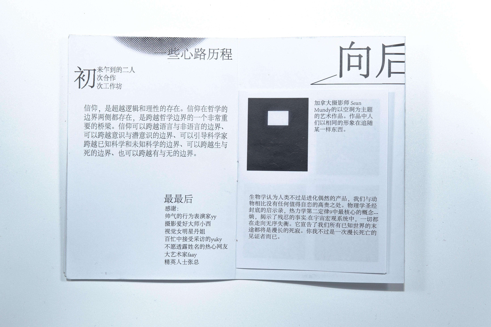

Publishment,Video
Explore faith and sustenance.
'Xun'in Chinese means seek.This work is divided into two parts, including Video: Finding the Trail and Booklet: Finding the Stream. The video follows a man who has lost his faith and finds meaning in his existence. The booklet is writing, photography, and some summaries of the project. It uses an interesting folding method to make it a piece of A3 paper.